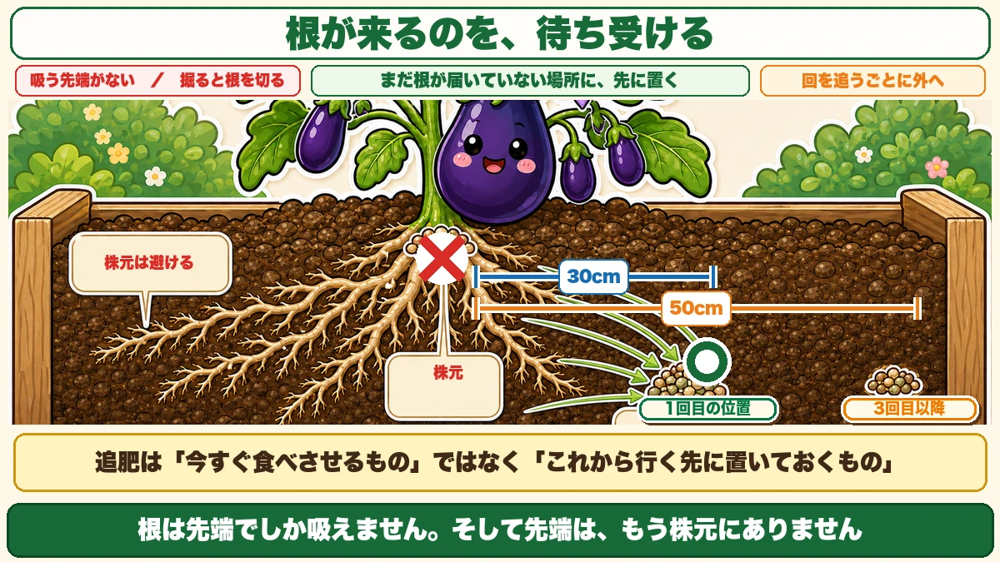
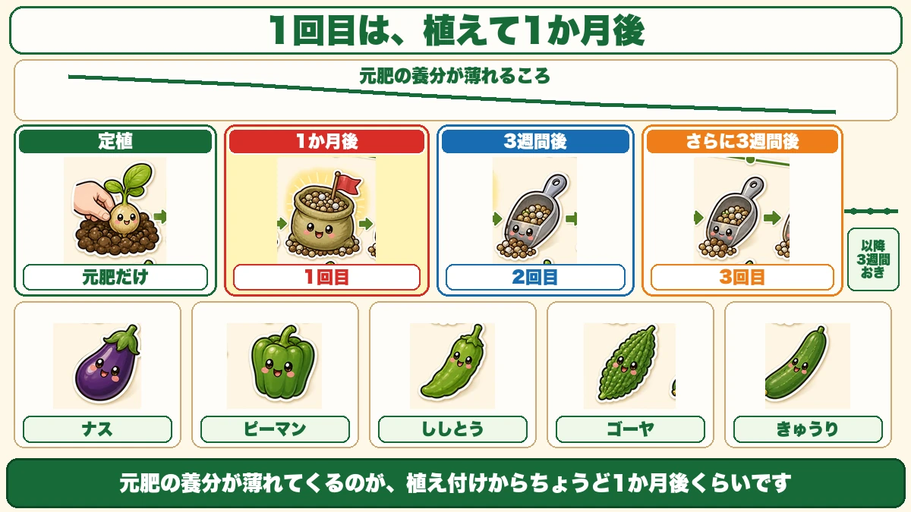
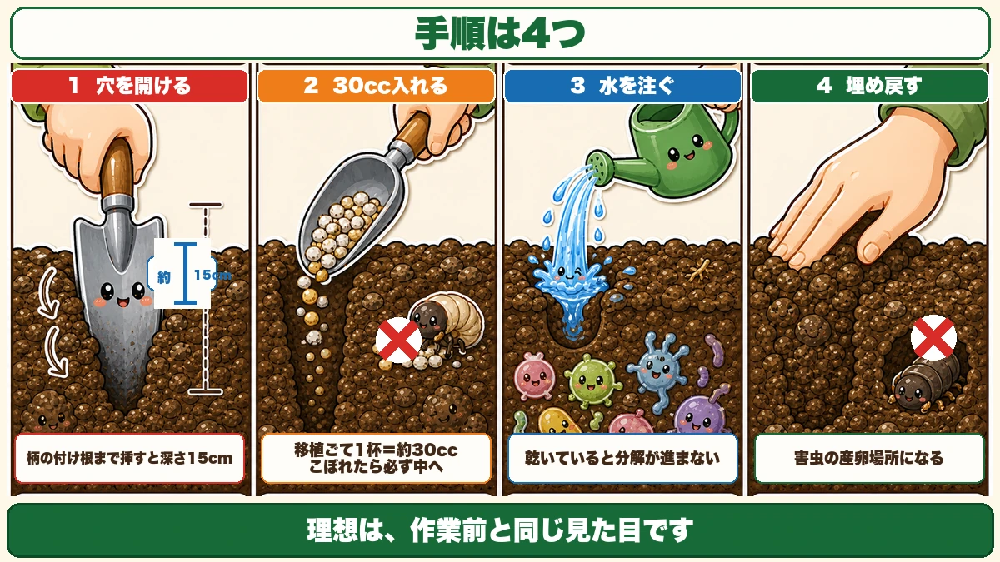
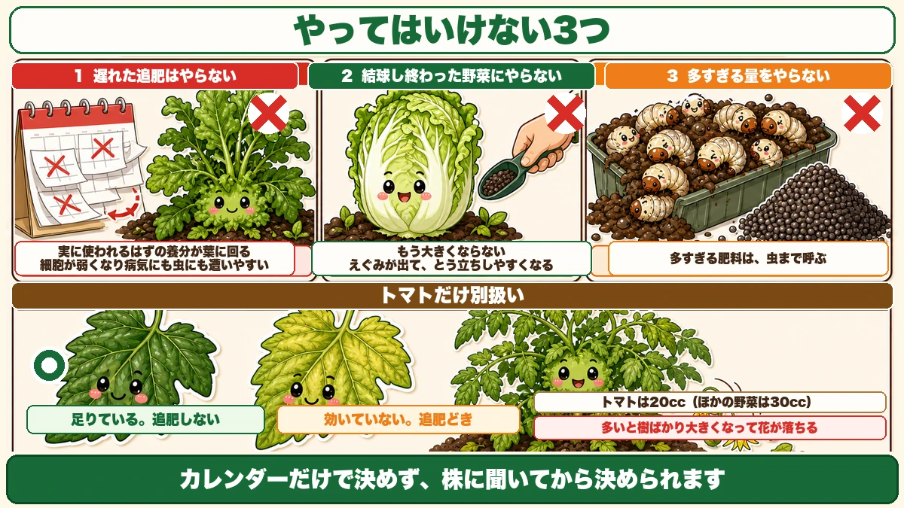

追肥を株元にやってはいけません🌱 根から30cm離す理由

🗨️「追肥って、株のまわりにまけばいいんでしょ？」
🗨️「いつやればいいのか、毎年わからなくなる」
🗨️「あげているのに、大きくならない」
どうも、8150（えいこう）です🌱 家庭菜園歴8年、理科の教員免許を持っていて、有機・無農薬で野菜を育てています。
追肥は、家庭菜園でいちばん「なんとなく」でやられている作業だと思います。私もそうでした。
先に、この記事でいちばん言いたいことを言っておきます。
★追肥を株元にやってはいけません。
根から30cmほど離した、★まだ根が届いていない場所に置きます。理由は、前にお話しした「根は先端でしか吸えない」につながります☺️
なぜ株元ではだめなのか
根の先端は、もう株元にない
前に、根の話をしました。
★根は、伸びた部分では吸収できません。吸っているのは先端だけです。
では、植えて1か月たった株の根の先端は、どこにあるでしょうか。
★株元ではありません。外へ外へ伸びていって、うねの肩のあたりまで来ています。

株元に肥料を置くということは、★吸う口がないところに食事を置くのと同じです。
★掘ると、根を切ってしまう
もうひとつ、実害があります。
追肥のとき、移植ごてで土に穴を開けます。★株元の近くを掘ると、そこに張っている根を切断してしまいます。
肥料をやろうとして、根を減らす。これでは何をしているのか分かりません。
★根が来るのを、待ち受ける
正しい考え方はこうです。
★根がまだ到達していない場所に、先に肥料を置いておく。
根は伸びていきます。数週間後、伸びた先端がそこへ到着します。★そのとき、ちょうど食事が用意されている。
追肥は「今すぐ食べさせるもの」ではなく、★「これから行く先に置いておくもの」です。
いつやるか
★1回目は、定植から1か月後
うねを作るとき、元肥を入れています。
★その元肥の養分が薄れてくるのが、植え付けからちょうど1か月後くらいです。
だから1回目の追肥は、★定植から1か月後。ここが基準になります。

★2回目からは、3週間おき
そのあとは、★3週間おきに繰り返します。
- 定植 … 元肥だけ
- ★1か月後 … 1回目
- ★その3週間後 … 2回目
- ★さらに3週間後 … 3回目
- 以降、収穫が続くあいだ3週間おき
ナス、ピーマン、ししとう、ゴーヤ、きゅうり。★この5つは同じやり方で構いません。
茎ブロッコリーは3週間に1回
秋冬のものも、考え方は同じです。
茎ブロッコリーは春まで次々とわき芽が出てくるので、★3週間に1回の追肥を続けると、長く収穫が楽しめます。
どこに、どれだけ
★根から30cm離す
位置の基準です。
- ★1回目・2回目 … 根から30cmほど離れたところ
- ★3回目以降 … うねの肩口を50cmほど開けて、その外側
回を追うごとに、★外へ外へずらしていきます。根の広がりに合わせて、いつも「少し先」を狙います。
小さい株なら、株元でもいい
例外があります。
植えたばかりで根がまだ小さい株なら、株元に近くても構いません。根がその範囲にしかないからです。
でも★株が大きくなったら、最低でも20cmは離してください。
★移植ごてが、定規になります
量と深さは、道具で測れます。
- ★移植ごての長さが、おおよそ15cm。★これが穴の深さの目安
- ★移植ごて1杯が、およそ30cc。★これが1か所ぶんの量
★1か所30cc。これだけ覚えておけば、はかりは要りません。
前に「スコップの剣先が30cm」という話をしました。★道具そのものが定規になっているのは、なかなか便利です。
手順

①穴を開ける
移植ごてを、根から30cm離れた場所に挿します。★柄の付け根まで挿すと、深さ15cmです。
そのまま★上下に少し動かすと、穴が開きます。
折れた支柱があれば、それを使ってぐるぐる回して開ける方法もあります。マルチを大きく破らずに済むので、こちらのほうがきれいです。
②30cc入れる
移植ごてで1杯ぶん、穴に入れます。
ここでひとつ注意です。★こぼれた肥料は、必ず中に入れてください。
★表面に肥料が残っていると、匂いで虫が寄ってきます。せっかくの追肥が、虫を呼ぶ道具になってしまいます。
③★水を注ぐ
肥料を入れたら、★その穴に水を注いでください。
有機の肥料は、微生物が分解してはじめて効きます。★乾いていると分解が進みません。水を入れることで、微生物が働きはじめます。
④★埋め戻す
最後に、土をかぶせて穴をふさぎます。指で押し込むだけで十分です。
★穴を開けっぱなしにしないでください。理由が2つあります。
- ★風が入って、土が乾く
- ★害虫が入り込む
とくに2つ目です。前にお話ししたとおり、ウリハムシは株元の土に卵を産みます。★開いた穴は、絶好の産卵場所になります。
★マルチを張っているなら、開けた部分もふさいでください。理想は「作業前と同じ見た目」です。
★トマトだけ、別扱い
多いと、花が落ちます
ここは例外なので、分けてお話しします。
★トマトは、初期に肥料を与えすぎると失敗します。
何が起きるか。★樹ばかりが大きくなって、花芽ができたときに、その花が落ちてしまいます。
葉も茎も立派なのに、実がつかない。前にスナップエンドウで「つるぼけ」の話をしましたが、あれと同じ現象です。
★量は20ccに減らす
だからトマトは、★1か所20ccくらいに減らしてください。
ほかの野菜が30ccなので、★3分の2ということですね。
★★葉の色で判断する
そして、トマトには分かりやすい目安があります。
★葉の色を見てください。

- ★濃い緑 … 肥料は足りています。追肥しなくていい
- ★黄緑がかっている … 肥料が効いていません。追肥どきです
とくに★栽培の前半に葉が黄緑なら、追肥のサインです。
これは便利です。カレンダーだけで機械的にやるのではなく、★株に聞いてから決められます。
★やってはいけない、3つ
①遅れた追肥は、やらない
これが意外だと思います。
「先月やり忘れたから、今やろう」
★やらないでください。
理由は、効くタイミングがずれるからです。★有機肥料は、分解に時間がかかります。冬場なら1か月ほど。
実が太る時期に肥料が効きはじめると、どうなるか。★実に使われるはずの養分が、葉のほうに使われます。
- 葉ばかり茂る（葉ボケ）
- つるばかり伸びる（つるぼけ）
- 実がつかない
そして、もうひとつこわいことがあります。
★そうなった株は、細胞ひとつひとつが弱々しくなります。だから★病気にも害虫にもやられやすくなる。
★遅れたと気づいたら、あえてやらないほうが安全です。
②結球し終わった野菜に、やらない
白菜やキャベツが巻き終わって、収穫できる状態になっている。
そこに追肥をしても、★もう大きくなりません。
それどころか、悪いことが起きます。
- ★えぐみが出る
- ★とう立ちしやすくなる
★とう立ちする前に食べる。これが正解です。小さくても、そのまま収穫してください。
③多すぎる量を、やらない
最後です。★多ければいいというものではありません。
面白い例があります。プランターの土から、★コガネムシの幼虫が150匹出てきたという話です。
原因は、★肥料と堆肥のやりすぎでした。
有機物が多いと、それを目当てに虫が集まって卵を産みます。畑でも同じことが起きます。
★多すぎる肥料は、虫まで呼びます。「効かせすぎない」は、無農薬でとくに大事な考え方です。
数字だけ、まとめておきます
この記事の要点
- ★追肥を株元にやってはいけない。★根の先端はもう株元にない
- ★株元を掘ると根を切ってしまう
- 追肥は「今食べさせるもの」ではなく★「これから根が行く先に置いておくもの」
- ★1回目は定植から1か月後（元肥が薄れるころ）
- ★2回目からは3週間おき
- ナス・ピーマン・ししとう・ゴーヤ・きゅうりは★同じやり方でよい
- ★茎ブロッコリーは3週間に1回で長く穫れる
- 位置は★根から30cm。★3回目以降はうねの肩口を50cm開けて外側へ
- ★小さい株は株元でもよいが、大きくなったら最低20cm離す
- ★移植ごての長さ＝約15cm（穴の深さ）／★移植ごて1杯＝約30cc（1か所ぶん）
- 手順は★①穴を開ける ②30cc入れる ③★水を注ぐ ④★埋め戻す
- ★こぼれた肥料は中へ。匂いで虫が寄る
- ★穴を開けっぱなしにしない。乾くうえ、★害虫の産卵場所になる
- ★トマトだけ別。多いと樹が大きくなって★花が落ちる。★20ccに減らす
- ★★トマトは葉の色で判断。濃い緑＝足りている／黄緑＝追肥どき
- ★遅れた追肥はやらない。実の養分が葉に回って★葉ボケ・つるぼけになる
- ★そうなった株は細胞が弱く、病気にも虫にもやられやすい
- ★結球し終わった野菜に追肥しない。★えぐみが出て、とう立ちしやすくなる
- ★多すぎる肥料は虫を呼ぶ
全部やろうとしなくて大丈夫です。まずはカレンダーに、苗を植えた日から1か月後の印だけ付けてください。★そこが1回目です🌱
次回は、5月の作業の話。1年でいちばん植え付けが集中する月を、順番に整理します🍅
ここまで読んでくださって、ありがとうございました。
発酵油かす
効きはじめるまで2週間ほどかかります。だから、まだ根が届いていない場所へ先に置いておきます。
![[商品価格に関しましては、リンクが作成された時点と現時点で情報が変更されている場合がございます。]](https://hbb.afl.rakuten.co.jp/hgb/55e75fe5.20db4cd1.55e75fe7.d1ec32cc/?me_id=1194164&item_id=10000908&pc=https%3A%2F%2Fthumbnail.image.rakuten.co.jp%2F%400_mall%2Fgardening%2Fcabinet%2Fhiryousennyouhiryo%2Fomakase-1.jpg%3F_ex%3D240x240&s=240x240&t=picttext "[商品価格に関しましては、リンクが作成された時点と現時点で情報が変更されている場合がございます。]")

炭化けいふん
速効性で、リン酸とカルシウムを補います。実がつきはじめてからの追肥に。
![[商品価格に関しましては、リンクが作成された時点と現時点で情報が変更されている場合がございます。]](https://hbb.afl.rakuten.co.jp/hgb/55e7612a.7de1526b.55e7612b.01a50904/?me_id=1214866&item_id=10002182&pc=https%3A%2F%2Fthumbnail.image.rakuten.co.jp%2F%400_mall%2Fkaju%2Fcabinet%2F00714580%2F03462454%2F07486601%2Fimgrc0071643813.jpg%3F_ex%3D240x240&s=240x240&t=picttext "[商品価格に関しましては、リンクが作成された時点と現時点で情報が変更されている場合がございます。]")
液肥
すぐ効かせたいときだけ。追肥の代わりではなく、応急処置として使います。
![[商品価格に関しましては、リンクが作成された時点と現時点で情報が変更されている場合がございます。]](https://hbb.afl.rakuten.co.jp/hgb/56bc2da1.2bf36c6e.56bc2da2.7b66fad7/?me_id=1347284&item_id=10000008&pc=https%3A%2F%2Fthumbnail.image.rakuten.co.jp%2F%400_mall%2Fmandahakko%2Fcabinet%2Fsyokubutsumanda%2F260306_smn_amn5004.jpg%3F_ex%3D240x240&s=240x240&t=picttext "[商品価格に関しましては、リンクが作成された時点と現時点で情報が変更されている場合がございます。]")
三角ホー
株元から30cm離したところを浅く削って、そこへ入れます。立ったまま作業できます。

あわせて読みたい